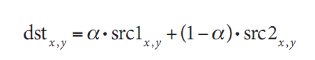
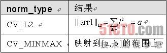

初探OpenCV
OpenCV的基本数据类型
OpenCV提供了多种基本数据类型。虽然这些数据类型在C语言中不是基本类型，但结构都很简单，可将它们作为原子类型。可以在"…/OpenCV/cxcore/include"目录下的cxtypes.h文件中查看其详细定义。
在这些数据类型中最简单的就是CvPoint。CvPoint是一个包含integer类型成员x和y的简单结构体。CvPoint有两个变体类型：CvPoint2D32f和CvPoint3D32f。前者同样有两个成员x，y，但它们是浮点类型；而后者却多了一个浮点类型的成员z。
CvSize类型与CvPoint非常相似，但它的数据成员是integer类型的width和height。如果希望使用浮点类型，则选用CvSize的变体类型CvSize2D32f。
CvRect类型派生于CvPoint和CvSize，它包含4个数据成员：x，y，width和height。(正如你所想的那样，该类型是一个复合类型)。
下一个(但不是最后一个)是包含4个整型成员的CvScalar类型，当内存不是问题时，CvScalar经常用来代替1，2或者3个实数成员(在这个情况下，不需要的分量被忽略)。CvScalar有一个单独的成员val，它是一个指向4个双精度浮点数数组的指针。
所有这些数据类型具有以其名称来定义的构造函数，例如cvSize()。(构造函数通常 具有与结构类型一样的名称，只是首字母不大写)。记住，这是C而不是C++，所以这些构造函数只是内联函数，它们首先提取参数列表，然后返回被赋予相关值的结构。 【31】
各数据类型的内联构造函数被列在表3-1中：cvPointXXX()，cvSize()，cvRect()和cvScalar()。这些结构都十分有用，因为它们不仅使代码更容易编写，而且也更易于阅读。假设要在(5，10)和(20，30)之间画一个白色矩形，只需简单调用：
cvRectangle(
myImg,
cvPoint(5,10),
cvPoint(20,30),
cvScalar(255,255,255)
);
表3-1：points, size, rectangles和calar三元组的结构
结构 |
成员 |
意义 |
CvPoint |
int x, y |
图像中的点 |
CvPoint2D32f |
float x, y |
二维空间中的点 |
CvPoint3D32f |
float x, y, z |
三维空间中的点 |
CvSize |
int width, height |
图像的尺寸 |
CvRect |
int x, y, width, height |
图像的部分区域 |
CvScalar |
double val[4] |
RGBA 值 |
cvScalar是一个特殊的例子：它有3个构造函数。第一个是cvScalar()，它需要一个、两个、三个或者四个参数并将这些参数传递给数组val[]中的相应元素。第二个构造函数是cvRealScalar()，它需要一个参数，它被传递给给val[0]，而val[]数组别的值被赋为0。最后一个有所变化的是cvScalarAll()，它需要一个参数并且val[]中的4个元素都会设置为这个参数。
矩阵和图像类型
图3-1为我们展示了三种图像的类或结构层次结构。使用OpenCV时，会频繁遇到IplImage数据类型，第2章已经出现多次。IplImage是我们用来为通常所说的"图像"进行编码的基本结构。这些图像可能是灰度，彩色，4通道的(RGB+alpha)，其中每个通道可以包含任意的整数或浮点数。因此，该类型比常见的、易于理解的3通道8位RGB图像更通用 。
OpenCV提供了大量实用的图像操作符，包括缩放图像，单通道提取，找出特定通道***最小值，两个图像求和，对图像进行阈值操作，等等。本章我们将仔细介绍这类操作。 【32】
图3-1：虽然OpenCV是由C语言实现的，但它使 用的结构体也是遵循面向对象的思想设计的。实际上，IplImage由 CvMat派生，而CvMat由CvArr派生 |
在开始探讨图像细节之前，我们需要先了解另一种数据类型CvMat，OpenCV的矩阵结构。虽然OpenCV完全由C语言实现，但CvMat和IplImage之间的关系就如同C++中的继承关系。实质上，IplImage可以被视为从CvMat中派生的。因此，在试图了解复杂的派生类之前，***先了解基本的类。第三个类CvArr，可以被视为一个抽象基类，CvMat由它派生。在函数原型中，会经常看到CvArr(更准确地说，CvArr*)，当它出现时，便可以将CvMat*或IplImage*传递到程序。
CvMat矩阵结构
在开始学习矩阵的相关内容之前，我们需要知道两件事情。第一，在OpenCV中没有向量(vector)结构。任何时候需要向量，都只需要一个列矩阵(如果需要一个转置或者共轭向量，则需要一个行矩阵)。第二，OpenCV矩阵的概念与我们在线性代数课上学习的概念相比，更抽象，尤其是矩阵的元素，并非只能取简单的数值类型。例如，一个用于新建一个二维矩阵的例程具有以下原型：
cvMat* cvCreateMat ( int rows, int cols, int type );
这里type可以是任何预定义类型，预定义类型的结构如下：CV_<bit_depth> (S|U|F)C<number_of_channels>。于是，矩阵的元素可以是32位浮点型数据(CV_32FC1)，或者是无符号的8位三元组的整型数据(CV_8UC3)，或者是无数的其他类型的元素。一个CvMat的元素不一定就是个单一的数字。在矩阵中可以通过单一(简单)的输入来表示多值，这样我们可以在一个三原色图像上描绘多重色彩通道。对于一个包含RGB通道的简单图像，大多数的图像操作将分别应用于每一个通道(除非另有说明)。
实质上，正如例3-1所示，CvMat的结构相当简单，(可以自己打开文件…/opencv/cxcore/include/cxtypes.h查看)。矩阵由宽度(width)、高度(height)、类型(type)、行数据长度(step，行的长度用字节表示而不是整型或者浮点型长度)和一个指向数据的指针构成(现在我们还不能讨论更多的东西)。可以通过一个指向CvMat的指针访问这些成员，或者对于一些普通元素，使用现成的访问方法。例如，为了获得矩阵的大小，可通过调用函数vGetSize(CvMat*)，返回一个CvSize结构，便可以获取任何所需信息，或者通过独立访问高度和宽度，结构为matrix->height 和matrix->width。 【33～34】
例3-1：CvMat结构：矩阵头
typedef struct CvMat {
int type;
int step;
int* refcount; // for internal use only
union {
uchar* ptr;
short* s;
int* i;
float* fl;
double* db;
} data;
union {
int rows;
int height;
};
union {
int cols;
int width;
};
} CvMat;
此类信息通常被称作矩阵头。很多程序是区分矩阵头和数据体的，后者是各个data成员所指向的内存位置。
矩阵有多种创建方法。最常见的方法是用cvCreateMat()，它由多个原函数组成，如cvCreateMatHeader()和cvCreateData()。cvCreateMatHeader()函数创建CvMat结构，不为数据分配内存，而cvCreateData()函数只负责数据的内存分配。有时，只需要函数cvCreateMatHeader()，因为已因其他理由分配了存储空间，或因为还不准备分配存储空间。第三种方法是用函数cvCloneMat (CvMat*) ，它依据一个现有矩阵创建一个新的矩阵。当这个矩阵不再需要时，可以调用函数cvReleaseMat(CvMat*)释放它。 【34】
例3-2概述了这些函数及其密切相关的其他函数。
例3-2：矩阵的创建和释放
//Create a new rows by cols matrix of type 'type'.
//
CvMat* cvCreateMat( int rows, int cols, int type );
//Create only matrix header without allocating data
//
CvMat* cvCreateMatHeader( int rows, int cols, int type );
//Initialize header on existiong CvMat structure
//
CvMat* cvInitMatHeader(
CvMat* mat,
int rows,
int cols,
int type,
void* data = NULL,
int step = CV_AUTOSTEP
);
//Like cvInitMatHeader() but allocates CvMat as well.
//
CvMat cvMat(
int rows,
int cols,
int type,
void* data = NULL
);
//Allocate a new matrix just like the matrix 'mat'.
//
CvMat* cvCloneMat( const cvMat* mat );
// Free the matrix 'mat', both header and data.
//
void cvReleaseMat( CvMat** mat );
与很多OpenCV结构类似，有一种构造函数叫cvMat，它可以创建CvMat结构，但实际上不分配存储空间，仅创建头结构(与cvInitMatHeader()类似)。这些方法对于存取到处散放的数据很有作用，可以将矩阵头指向这些数据，实现对这些数据的打包，并用操作矩阵的函数去处理这些数据，如例3-3所示。
例3-3：用固定数据创建一个OpenCV矩阵
//Create an OpenCV Matrix containing some fixed data.
//
float vals[] = { 0.866025, -0.500000, 0.500000, 0.866025 };
CvMat rotmat;
cvInitMatHeader(
&rotmat,
2,
2,
CV_32FC1,
vals
);
一旦我们创建了一个矩阵，便可用它来完成很多事情。最简单的操作就是查询数组定义和数据访问等。为查询矩阵，我们可以使用函数cvGetElemType(const CvArr* arr)，cvGetDims(const CvArr* arr, int* sizes=NULL)和cvGet- DimSize(const CvArr* arr，int index)。第一个返回一个整型常数，表示存储在数组里的元素类型(它可以为CV_8UC1和CV_64FC4等类型)。第二个取出数组以及一个可选择的整型指针，它返回维数(我们当前的实例是二维，但是在后面我们将遇到的N维矩阵对象)。如果整型指针不为空，它将存储对应数组的高度和宽度(或者N维数)。最后的函数通过一个指示维数的整型数简单地返回矩阵在那个维数上矩阵的大小。
矩阵数据的存取
访问矩阵中的数据有3种方法：简单的方法、麻烦的方法和恰当的方法。
简单的方法
从矩阵中得到一个元素的最简单的方法是利用宏CV_MAT_ELEM()。这个宏(参见例3-4)传入矩阵、待提取的元素的类型、行和列数4个参数，返回提取出的元素的值。
例3-4：利用CV_MAT_ELEM()宏存取矩阵
CvMat* mat = cvCreateMat( 5, 5, CV_32FC1 );
float element_3_2 = CV_MAT_ELEM( *mat, float, 3, 2 );
更进一步，还有一个与此宏类似的宏，叫CV_MAT_ELEM_PTR()。CV_MAT_ELEM_ PTR()(参见例3-5)传入矩阵、待返回元素的行和列号这3个参数，返回指向这个元素的指针。该宏和CV_MAT_ELEM()宏的最重要的区别是后者在指针解引用之前将其转化成指定的类型。如果需要同时读取数据和设置数据，可以直接调用CV_MAT_ELEM_PTR()。但在这种情况下，必须自己将指针转化成恰当的类型。
例3-5：利用宏CV_MAT_ELEM_PTR()为矩阵设置一个数值
CvMat* mat = cvCreateMat( 5, 5, CV_32FC1 );
float element_3_2 = 7.7;
*( (float*)CV_MAT_ELEM_PTR( *mat, 3, 2 ) ) = element_3_2;
【36】
遗撼的是，这些宏在每次调用的时候都重新计算指针。这意味着要查找指向矩阵基本元素数据区的指针、计算目标数据在矩阵中的相对地址，然后将相对位置与基本位置相加。所以，即使这些宏容易使用，但也不是存取矩阵的最佳方法。在计划顺序访问矩阵中的所有元素时，这种方法的缺点尤为突出。下面我们将讲述怎么运用最好的方法完成这个重要任务。
麻烦的方法
在"简单的方法"中讨论的两个宏仅仅适用于访问1维或2维的数组(回忆一下，1维的数组，或者称为"向量"实际只是一个n×1维矩阵)。OpenCV提供了处理多维数组的机制。事实上，OpenCV可以支持普通的N维的数组，这个N值可以取值为任意大的数。
为了访问普通矩阵中的数据，我们可以利用在例3-6和例3-7中列举的cvPtr*D和cvGet*D…等函数族。cvPtr*D家族包括cvPtr1D(), cvPtr2D(), cvPtr3D()和cvPtrND()…。这三个函数都可接收CvArr*类型的矩阵指针参数，紧随其后的参数是表示索引的整数值，最后是一个可选的参数，它表示输出值的类型。函数返回一个指向所需元素的指针。对于cvPtrND()来说，第二个参数是一个指向一个整型数组的指针，这个数组中包含索引的合适数字。后文会再次介绍此函数(在这之后的原型中，也会看到一些可选参数，必要时会有讲解)。
例3-6：指针访问矩阵结构
uchar* cvPtr1D(
const CvArr* arr,
int idx0,
int* type = NULL
);
uchar* cvPtr2D(
const CvArr* arr,
int idx0,
int idx1,
int* type = NULL
);
uchar* cvPtr3D(
const CvArr* arr,
int idx0,
int idx1,
int idx2,
int* type = NULL
);
uchar* cvPtrND(
const CvArr* arr,
int* idx,
int* type = NULL,
int create_node = 1,
unsigned* precalc_hashval = NULL
);
【37～38】
如果仅仅是读取数据，可用另一个函数族cvGet*D。如例3-7所示，该例与例3-6类似，但是返回矩阵元素的实际值。
例3-7：CvMat和IPlImage元素函数
double cvGetReal1D( const CvArr* arr, int idx0 );
double cvGetReal2D( const CvArr* arr, int idx0, int idx1 );
double cvGetReal3D( const CvArr* arr, int idx0, int idx1, int idx2 );
double cvGetRealND( const CvArr* arr, int* idx );
CvScalar cvGet1D( const CvArr* arr, int idx0 );
CvScalar cvGet2D( const CvArr* arr, int idx0, int idx1 );
CvScalar cvGet3D( const CvArr* arr, int idx0, int idx1, int idx2 );
CvScalar cvGetND( const CvArr* arr, int* idx );
cvGet*D中有四个函数返回的是整型的，另外四个的返回值是CvScalar类型的。这意味着在使用这些函数的时候，会有很大的空间浪费。所以，只是在你认为用这些函数比较方便和高效率的时候才用它们，否则，最好用cvPtr*D。
用cvPtr*D()函数族还有另外一个原因，即可以用这些指针函数访问矩阵中的特定的点，然后由这个点出发，用指针的算术运算得到指向矩阵中的其他数据的指针。在多通道的矩阵中，务必记住一点：通道是连续的，例如，在一个3通道2维的表示红、绿、蓝(RGB)矩阵中。矩阵数据如下存储rgbrgbrgb . . .。所以，要将指向该数据类型的指针移动到下一通道，我们只需要将其增加1。如果想访问下一个"像素"或者元素集，我们只需要增加一定的偏移量，使其与通道数相等。
另一个需要知道的技巧是矩阵数组的step元素(参见例3-1和例3-3)，step是矩阵中行的长度，单位为字节。在那些结构中，仅靠cols或width是无法在矩阵的不同行之间移动指针的，出于效率的考虑，矩阵或图像的内存分配都是4字节的整数倍。所以，三个字节宽度的矩阵将被分配4个字节，最后一个字节被忽略。因此，如果我们得到一个字节指针，该指针指向数据元素，那么我们可以用step和这个指针相加以使指针指向正好在我们的点的下一行元素。如果我们有一个整型或者浮点型的矩阵，对应的有整型和浮点型的指针指向数据区域，我们将让step/4与指针相加来移到下一行，对双精度型的，我们让step/8与指针相加(这里仅仅考虑了C将自动地将差值与我们添加的数据类型的字节数相乘)。 【38】
例3-8中的cvSet*D和cvGet*D多少有些相似，它通过一次函数调用为一个矩阵或图像中的元素设置值，函数cvSetReal*D()和函数cvSet*D()可以用来设置矩阵或者图像中元素的数值。
例3-8：为CvMat或者IplImage元素设定值的函数
void cvSetReal1D( CvArr* arr, int idx0, double value );
void cvSetReal2D( CvArr* arr, int idx0, int idx1, double value );
void cvSetReal3D(
CvArr* arr,
int idx0,
int idx1,
int idx2,
double value
);
void cvSetRealND( CvArr* arr, int* idx, double value );
void cvSet1D( CvArr* arr, int idx0, CvScalar value );
void cvSet2D( CvArr* arr, int idx0, int idx1, CvScalar value );
void cvSet3D(
CvArr* arr,
int idx0,
int idx1,
int idx2,
CvScalar value
);
void cvSetND( CvArr* arr, int* idx, CvScalar value );
为了方便，我们也可以使用cvmSet()和cvmGet()，这两个函数用于处理浮点型单通道矩阵，非常简单。
double cvmGet( const CvMat* mat, int row, int col )
void cvmSet( CvMat* mat, int row, int col, double value )
以下函数调用cvmSet()：
cvmSet( mat, 2, 2, 0.5000 );
等同于cvSetReal2D函数调用：
cvSetReal2D( mat, 2, 2, 0.5000 );
恰当的方法
从以上所有那些访问函数来看，你可能会想，没有必要再介绍了。实际上，这些set和get函数很少派上用场。大多数时侯，计算机视觉是一种运算密集型的任务，因而你想尽量利用最有效的方法做事。毋庸置疑，通过这些函数接口是不可能做到十分高效的。相反地，应该定义自己的指针计算并且在矩阵中利用自己的方法。如果打算对数组中的每一个元素执行一些操作，使用自己的指针是尤为重要的(假设没有可以为你执行任务的OpenCV函数)。
要想直接访问矩阵，其实只需要知道一点，即数据是按光栅扫描顺序存储的，列("x")是变化最快的变量。通道是互相交错的，这意味着，对于一个多通道矩阵来说，它们变化的速度仍然比较快。例3-9显示了这一过程。 【39～40】
例3-9：累加一个三通道矩阵中的所有元素
float sum( const CvMat* mat ) {
float s = 0.0f;
for(int row=0; row<mat-rows; row++ ) {
const float* ptr=(const float*)(mat-data.ptr + row * mat-step);
for( col=0; col<mat-cols; col++ ) {
s += *ptr++;
}
}
return( s );
}
计算指向矩阵的指针时，记住一点：矩阵的元素data是一个联合体。所以，对这个指针解引用的时候，必须指明结构体中的正确的元素以便得到正确的指针类型。然后，为了使指针产生正确的偏移，必须用矩阵的行数据长度(step)元素。我们以前曾提过，行数据元素的是用字节来计算的。为了安全，指针最好用字节计算，然后分配恰当的类型，如浮点型。CvMat结构中为了兼容IplImage结构，有宽度和高度的概念，这个概念已经被最新的行和列取代。最后要注意，我们为每行都重新计算了ptr，而不是简单地从开头开始，尔后每次读的时候累加指针。这看起来好像很繁琐，但是因为CvMat数据指针可以指向一个大型数组中的ROI，所以无法保证数据会逐行连续存取。
点的数组
有一个经常提到但又必须理解的问题是，包含多维对象的多维数组(或矩阵)和包含一维对象的高维数组之间的不同。例如，假设有n个三维的点，你想将这些点传递到参数类型为CvMat*的一些OpenCV函数中。对此，有四种显而易见的方式，记住，这些方法不一定等价。一是用一个二维数组，数组的类型是CV32FC1，有n行，3列(n×3)。类似地，也可以用一个3行n列(3×n)的二维数组。也可以用一个n行1列(n×1)的数组或者1行n列(1×n)的数组，数组的类型是CV32FC3。这些例子中，有些可以自由转换(这意味着只需传递一个，另一个便可可以计算得到)，有的则不能。要想理解原因，可以参考图3-2中的内存布局情况。
从图中可以看出，在前三种方式中，点集以同样的方式被映射到内存。但最后一种方式则不同。对N维数组的c维点，情况变得更为复杂。需要记住的最关键的一点是，给定点的位置可以由以下公式计算出来。
其中，Ncols 和Nchannels分别表示列数和通道数 。总的来说，从这个公式中可以看出一点，一个c维对象的N维数组和一个一维对象的(N+c)维数组不同。至于N=1(即把向量描绘成n×1或者1×n数组)，有一个特殊之处(即图3-2显示的等值)值得注意，如果考虑到性能，可以在有些情况下用到它。
关于OpenCV的数据类型，如CvPoint2D和CvPoint2D32f，我们要说明的最后一点是：这些数据类型被定义为C结构，因此有严格定义的内存布局。具体说来，由整型或者浮点型组成的结构是顺序型的通道。那么，对于一维的C语言的对象数组来说，其数组元素都具有相同的内存布局，形如CV32FC2的n×1或者1×n数组。这和申请CvPoint3D32f类型的数组结构也是相同的。【41】
IplImage数据结构
掌握了前面的知识，再来讨论IplImage数据结构就比较容易了。从本质上讲，它是一个CvMat对象，但它还有其他一些成员变量将矩阵解释为图像。这个结构最初被定义为Intel图像处理库(IPL) 的一部分。IplImage结构的准确定义如例3-10所示。
例3-10：IplImage结构
typedef struct _IplImage {
int nSize;
int ID;
int nChannels;
int alphaChannel;
int depth;
char colorModel[4];
char channelSeq[4];
int dataOrder;
int origin;
int align;
int width;
int height;
struct _IplROI* roi;
struct _IplImage* maskROI;
void* imageId;
struct _IplTileInfo* tileInfo;
int imageSize;
char* imageData;
int widthStep;
int BorderMode[4];
int BorderConst[4];
char* imageDataOrigin;
} IplImage;
我们试图讨论这些变量的某些功能。有些变量不是很重要，但是有些变量非常重要，有助于我们理解OpenCV解释和处理图像的方式。
width和height这两个变量很重要，其次是depth和nchannals。depth变量的值取自ipl.h中定义的一组数据，但与在矩阵中看到的对应变量不同。因为在图像中，我们往往将深度和通道数分开处理，而在矩阵中，我们往往同时表示它们。可用的深度值如表3-2所示。【42】
表3-2：OpenCV图像类型
宏 |
图像像素类型 |
IPL_DEPTH_8U |
无符号8位整数 (8u) |
IPL_DEPTH_8S |
有符号 8位整数(8s) |
IPL_DEPTH_16S |
有符号16位整数(16s) |
IPL_DEPTH_32S |
有符号32位整数(32s) |
IPL_DEPTH_32F |
32位浮点数单精度(32f) |
IPL_DEPTH_64F |
64位浮点数双精度(64f) |
通道数nChannels可取的值是1，2，3或4。
随后两个重要成员是origin和dataOrder。origin变量可以有两种取值：IPL_ORIGIN_TL 或者 IPL_ORIGIN_BL，分别设置坐标原点的位置于图像的左上角或者左下角。在计算机视觉领域，一个重要的错误来源就是原点位置的定义不统一。具体而言，图像的来源、操作系统、编解码器和存储格式等因素都可以影响图像坐标原点的选取。举例来说，你或许认为自己正在从图像上面的脸部附近取样，但实际上却在图像下方的裙子附近取样。避免此类现象发生的最好办法是在最开始的时候检查一下系统，在所操作的图像块的地方画点东西试试。
dataOrder的取值可以是IPL_DATA_ORDER_PIXEL或IPL_DATA_ORDER_PLANE ，前者指明数据是将像素点不同通道的值交错排在一起(这是常用的交错排列方式)，后者是把所有像素同通道值排在一起，形成通道平面，再把平面排列起来。 参数widthStep与前面讨论过的CvMat中的step参数类似，包括相邻行的同列点之间的字节数。仅凭变量width是不能计算这个值的，因为为了处理过程更高效每行都会用固定的字节数来对齐；因此在第i行末和第i+1行开始处可能会有些冗于字节。参数imageData包含一个指向第一行图像数据的指针。如果图像中有些独立的平面(如当dataOrder = IPL_DATA_ORDER_PLANE)那么把它们作为单独的图像连续摆放，总行数为height和nChannels的乘积。但通常情况下，它们是交错的，使得行数等于高度，而且每一行都有序地包含交错的通道。
最后还有一个实用的重要参数-- 感兴趣的区域(ROI)，实际上它是另一个IPL/IPP 结构IplROI的实例。IplROI包含xOffset，yOffset，height，width和coi成员变量，其中COI代表channel of interest(感兴趣的通道)。ROI的思想是： 一旦设定ROI，通常作用于整幅图像的函数便会只对ROI所表示的子图像进行操作。如果IplImage变量中设置了ROI，则所有的OpenCV函数就会使用该ROI变量。如果COI被设置成非0值，则对该图像的操作就只作用于被指定的通道上了 。不幸的是，许多OpenCV函数都忽略参数COI。
访问图像数据
通常，我们需要非常迅速和高效地访问图像中的数据。这意味着我们不应受制于存取函数(如cvSet*D之类)。实际上，我们想要用最直接的方式访问图像内的数据。现在，应用已掌握的IplImage内部结构的知识，我们知道怎样做才是***的方法。
虽然OpenCV中有很多优化函数帮助我们完成大多数的图像处理的任务，但是还有一些任务，库中没有预先包装好的函数可以帮我们解决。例如，如果我们有一个三通道HSV图像[Smith78] ，在色度保持不变的情况下，我们要设置每个点的饱和度和高度为255(8位图像的***值)，我们可以使用指针遍历图像，类似于例3-9中的矩阵遍历。然而，有一些细微的不同，是源于IplImage和CvMat结构的差异。例3-11演示了***效的方法。
例3-11：仅***化HSV 图像"S"和"V"部分
void saturate_sv( IplImage* img ) {
for( int y=0; y<img-height; y++ ) {
uchar* ptr = (uchar*) (
img-imageData + y * img-widthStep
);
for( int x=0; x<img-width; x++ ) {
ptr[3*x+1] = 255;
ptr[3*x+2] = 255;
}
}
}
在以上程序中，我们用指针ptr指向第y行的起始位置。接着，我们从指针中析出饱和度和高度在x维的值。因为这是一个三通道图像，所以C通道在x行的位置是3*x+c。
与CvMat的成员data相比，IplImage和CvMat之间的一个重要度别在于imageData。CvMat的data元素类型是联合类型，所以你必须说明需要使用的指针类型。imageData指针是字节类型指针(uchar * )。我们已经知道是种类型的指针指向的数据是uchar类型的，这意味着，在图像上进行指针运算时，你可以简单地增加widthStep (也以字节为单位)，而不必关心实际数据类型。在这里重新说明一下：当要处理的是矩阵时，必须对偏移并进行调整，因为数据指针可能是非字节类型；当要处理的是图像时，可以直接使用偏移，因为数据指针总是字节类型，因此当你要用到它的时候要清楚是怎么回事。
对ROI和widthStep的补充
ROI和widthStep在实际工作中有很重要的作用，在很多情况下，使用它们会提高计算机视觉代码的执行速度。这是因为它们允许对图像的某一小部分进行操作，而不是对整个图像进行运算。在OpenCV中 ，普遍支持ROI和widthStep，函数的操作被限于感兴趣区域。要设置或取消ROI，就要使用cvSetImageROI()和cvResetImageROI()函数。如果想设置ROI，可以使用函数cvSetImageROI()，并为其传递一个图像指针和矩形。而取消ROI，只需要为函数cvResetImageROI()传递一个图像指针。
void cvSetImageROI( IplImage* image, CvRect rect );
void cvResetImageROI( IplImage* image );
为了解释ROI的用法，我们假设要加载一幅图像并修改一些区域，如例3-12的代码，读取了一幅图像，并设置了想要的ROI的x，y，width和height的值，***将ROI区域中像素都加上一个整数。本例程中通过内联的cvRect()构造函数设置ROI。通过cvResetImageROI()函数释放ROI是非常重要的，否则，将忠实地只显示ROI区域。
例3-12：用imageROI来增加某范围的像素
// roi_add <image <x <y <width <height <add
#include <cv.h
#include <highgui.h
int main(int argc, char** argv)
{
IplImage* src;
if( argc == 7 && ((src=cvLoadImage(argv[1],1)) != 0 ))
{
int x = atoi(argv[2]);
int y = atoi(argv[3]);
int width = atoi(argv[4]);
int height = atoi(argv[5]);
int add = atoi(argv[6]);
cvSetImage ROI(src, cvRect(x,y,width,height));
cvAddS(src, cvScalar(add),src);
cvResetImageROI(src);
cvNamedWindow( "Roi_Add", 1 );
cvShowImage( "Roi_Add", src );
cvWaitKey();
}
return 0;
}
使用例3-12中的代码把ROI集中于一张猫的脸部，并将其蓝色通道增加150后的效果如图3-3所示。【45～46】
图3-3：在猫脸上用ROI增加150像素的效果 |
通过巧妙地使用widthStep，我们可以达到同样的效果。要做到这一点，我们创建另一个图像头，让它的width和height的值等于interest_rect的width和height的值。我们还需要按interest_rect起点设置图像起点(左上角或者左下角)。下一步，我们设置子图像的widthStep与较大的interest_img相同。这样，即可在子图像中逐行地步进到大图像里子区域中下一行开始处的合适位置。***设置子图像的imageDate指针指向兴趣子区域的开始，如例3-13所示。
例3-13：利用其他widthStep方法把interest_img的所有像素值增加1
// Assuming IplImage *interest_img; and
// CvRect interest_rect;
// Use widthStep to get a region of interest
//
// (Alternate method)
//
IplImage *sub_img = cvCreateImageHeader(
cvSize(
interest_rect.width,
interest_rect.height
),
interest_img-depth,
interest_img-nChannels
);
sub_img-origin = interest_img-origin;
sub_img-widthStep = interest_img-widthStep;
sub_img-imageData = interest_img-imageData +
interest_rect.y * interest_img-widthStep +
interest_rect.x * interest_img-nChannels;
cvAddS( sub_img, cvScalar(1), sub_img );
cvReleaseImageHeader(&sub_img);
看起来设置和重置ROI更方便一些，为什么还要使用widthStep？原因在于有些时候在处理的过程中，想在操作过程中设置和保持一幅图像的多个子区域处于活动状态，但是ROI只能串行处理并且必须不断地设置和重置。
***，我们要在此提到一个词-- 掩码或模板，在代码示例中cvAddS()函数允许第四个参数默认值为空：const CvArr* mask=NULL。这是一个8位单通道数组，它允许把操作限制到任意形状的非0像素的掩码区，如果ROI随着掩码或模板变化，进程将会被限制在ROI和掩码的交集区域。掩码或模板只能在指定了其图像的函数中使用。
矩阵和图像操作
表3-3列出了一些操作矩阵图像的函数，其中的大部分对于图像处理非常有效。它们实现了图像处理中的基本操作，例如对角化、矩阵变换以及一些更复杂的诸如计算图像的统计操作。【47】
表3-3：矩阵和图像基本操作
函数名称 |
描述 |
cvAbs |
计算数组中所有元素的绝对值 |
cvAbsDiff |
计算两个数组差值的绝对值 |
续表
函数名称 |
描述 |
cvAbsDiffS |
计算数组和标量差值的绝对值 |
cvAdd |
两个数组的元素级的加运算 |
cvAddS |
一个数组和一个标量的 元素级的相加运算 |
cvAddWeighted |
两个数组的元素级的加权 相加运算(alpha融合) |
cvAvg |
计算数组中所有元素的平均值 |
cvAvgSdv |
计算数组中所有元素的 绝对值和标准差 |
cvCalcCovarMatrix |
计算一组n维空间向量的协方差 |
cvCmp |
对两个数组中的所有元 素运用设置的比较操作 |
cvCmpS |
对数组和标量运用设置的比较操作 |
cvConvertScale |
用可选的缩放值转换数组元素类型 |
cvConvertScaleAbs |
计算可选的缩放值的绝对值之 后再转换数组元素的类型 |
cvCopy |
把数组中的值复制到另一个数组中 |
cvCountNonZero |
计算数组中非0值的个数 |
cvCrossProduct |
计算两个三维向量的向量积(叉积) |
cvCvtColor |
将数组的通道从一个颜色空间 转换另外一个颜色空间 |
cvDet |
计算方阵的行列式 |
cvDiv |
用另外一个数组对一个数 组进行元素级的除法运算 |
cvDotProduct |
计算两个向量的点积 |
cvEigenVV |
计算方阵的特征值和特征向量 |
cvFlip |
围绕选定轴翻转 |
cvGEMM |
矩阵乘法 |
cvGetCol |
从一个数组的列中复制元素 |
cvGetCols |
从数据的相邻的多列中复制元素值 |
cvGetDiag |
复制数组中对角线上的所有元素 |
cvGetDims |
返回数组的维数 |
cvGetDimSize |
返回一个数组的所有维的大小 |
cvGetRow |
从一个数组的行中复制元素值 |
cvGetRows |
从一个数组的多个相邻的 行中复制元素值 |
cvGetSize |
得到二维的数组的尺寸， 以CvSize返回 |
cvGetSubRect |
从一个数组的子区域复制元素值 |
cvInRange |
检查一个数组的元素是否在 另外两个数组中的值的范围内 |
cvInRangeS |
检查一个数组的元素的值是 否在另外两个标量的范围内 |
续表
函数 名称 |
描述 |
cvInvert |
求矩阵的转置 |
cvMahalonobis |
计算两个向量间的马氏距离 |
cvMax |
在两个数组中进行元素级 的取***值操作 |
cvMaxS |
在一个数组和一个标量中 进行元素级的取***值操作 |
cvMerge |
把几个单通道图像合并为 一个多通道图像 |
cvMin |
在两个数组中进行元素级 的取最小值操作 |
cvMinS |
在一个数组和一个标量中 进行元素级的取最小值操作 |
cvMinMaxLoc |
寻找数组中的***最小值 |
cvMul |
计算两个数组的元素级的乘积 |
cvNot |
按位对数组中的每一个元素求反 |
cvNorm |
计算两个数组的正态相关性 |
cvNormalize |
将数组中元素进行规一化 |
cvOr |
对两个数组进行按位或操作 |
cvOrS |
在数组与标量之间进行按位或操作 |
cvReduce |
通过给定的操作符将二维 数组约简为向量 |
cvRepeat |
以平铺的方式进行数组复制 |
cvSet |
用给定值初始化数组 |
cvSetZero |
将数组中所有元素初始化为0 |
cvSetIdentity |
将数组中对角线上的元素 设为1，其他置0 |
cvSolve |
求出线性方程组的解 |
cvSplit |
将多通道所组分割成 多个单通道数组 |
cvSub |
两个数组元素级的相减 |
cvSubS |
元素级的从数组中减去标量 |
cvSubRS |
元素级的从标量中减去数组 |
cvSum |
对数组中的所有元素求和 |
cvSVD |
二维矩阵的奇异值分解 |
cvSVBkSb |
奇异值回代计算 |
cvTrace |
计算矩阵迹 |
cvTranspose |
矩阵的转置运算 |
cvXor |
对两个数组进行按位异或操作 |
cvXorS |
在数组和标量之间进行 按位异或操作 |
cvZero |
将所有数组中的元素置为0 |
cvAbs，cvAbsDiff和cvAbsDiffS
void cvAbs(
const CvArr* src,
const dst
);
void cvAbsDiff(
const CvArr* src1,
const CvArr* src2,
const dst
);
void cvAbsDiffS(
const CvArr* src,
CvScalar value,
const dst
);
【50】
这些函数计算一个数组的绝对值或数组和其他对象的差值的绝对值，cvAbs()函数计算src里的值的绝对值，然后把结果写到dst；cvAbsDiff()函数会先从src1减去src2，然后将所得差的绝对值写到dst；除了从所有src元素减掉的数是常标量值外，可以看到cvAbsDiffS()函数同cvAbsDiff()函数基本相同。
cvAdd, cvAddS, cvAddWeighted和alpha融合
void cvAdd(
const CvArr* src1,
const CvArr* src2,
CvArr* dst,
const CvArr* mask = NULL
);
void cvAddS(
const CvArr* src,
CvScalar value,
CvArr* dst,
const CvArr* mask = NULL
);
void cvAddWeighted(
const CvArr* src1,
double alpha,
const CvArr* src2,
double beta,
double gamma,
CvArr* dst
);
cvAdd()是一个简单的加法函数，它把src1里的所有元素同src2里的元素对应进行相加，然后把结果放到dst，如果mask没有被设为NULL，那么由mask中非零元素指定的dst元素值在函数执行后不变。cvAddS()与cvAdd()非常相似，惟一不同的是被加的数量标量value。
cvAddWeighted()函数同cvAdd()类似，但是被写入dst的结果是经过下面的公式得出的：【50】
矩阵和图像操作（2）
这个函数可用来实现alpha 融合 [Smith79; Porter84];也就是说，它可以用于一个图像同另一个图像的融合，函数的形式如下：
void cvAddWeighted(
const CvArr* src1,
double alpha,
const CvArr* src2,
double beta,
double gamma,
CvArr* dst
);
在函数cvAddWeighted()中我们有两个源图像，分别是src1和src2。这些图像可以是任何类型的像素，只要它们属于同一类型即可。它们还可以有一个或三个通道(灰度或彩色)，同样也要保持类型一致。结果图像dst，也必须同src1和src2是相同的像素类型。这些图像可能是不同尺寸，但是它们的ROI必须统一尺寸，否则OpenCV就会产生错误，参数alpha是src1的融合强度，beta是src2的融合强度，alpha融合公式如下：
可以通过设置α从0到1区间取值，β = 1 - α，γ为0，将前面公式转换为标准alpha融合方程。这就得出下式：

但是，在加权融合图像，以及目标图像的附加偏移参数γ方面, cvAddWeighted()提供了更大的灵活性。一般而言，你或许想让alpha和beta不小于0，并且两者之和不大于1，gamma的设置取决于像素所要调整到的平均或***值。例3-14展示了alpha融合的用法。
例3-14：src2 中alpha融合ROI以(0,0)开始，src1 中ROI以(x,y)开始
// alphablend <imageA <image B <x <y <width <height
// <alpha <beta
#include <cv.h
#include <highgui.h
int main(int argc, char** argv)
{
IplImage *src1, *src2;
if( argc == 9 && ((src1=cvLoadImage(argv[1],1)) != 0
)&&((src2=cvLoadImage(argv[2],1)) != 0 ))
{
int x = atoi(argv[3]);
int y = atoi(argv[4]);
int width = atoi(argv[5]);
int height = atoi(argv[6]);
double alpha = (double)atof(argv[7]);
double beta = (double)atof(argv[8]);
cvSetImage ROI(src1, cvRect(x,y,width,height));
cvSetImageROI(src2, cvRect(0,0,width,height));
cvAddWeighted(src1, alpha, src2, beta,0.0,src1);
cvResetImageROI(src1);
cvNamedWindow( "Alpha_blend", 1 );
cvShowImage( "Alpha_blend", src1 );
cvWaitKey();
}
return 0;
}
【51～52】
例3-14中的代码用两个源图像：初始的(src1)和待融合的(src2)。它从矩形的ROI中读取src1，然后将同样大小的ROI应用到src2中，这一次设在原始位置，它从命令行读入alpha和beta的级别但是把gamma设为0。Alpha融合使用函数cvAddWeighted()，结果被放到src1并显示，例子输出如图3-4所示，一个小孩的脸同一个猫的脸和身体被融合到了一起，值得注意的是，代码采用相同的ROI，像图3-3的例子一样。这次我们使用了ROI作为目标融合区域。
图3-4：一个小孩的脸被alpha融合到一只猫的脸上 |
cvAnd和cvAndS
void cvAnd(
const CvArr* src1,
const CvArr* src2,
CvArr* dst,
const CvArr* mask = NULL
);
void cvAndS(
const CvArr* src1,
CvScalar value,
CvArr* dst,
const CvArr* mask = NULL
);
这两个函数在src1数组上做按位与运算，在cvAnd()中每个dst元素都是由相应的src1和src2两个元素进行位与运算得出的。在cvAndS()中，位与运算由常标量value得出。同一般函数一样，如果mask是非空，就只计算非0 mask元素所对应的dst元素。
尽管支持所有的数据类型，但是对于cvAnd()来说，src1和src2要保持相同的数据类型。如果元素都是浮点型的，则使用该浮点数的按位表示。【52】
矩阵和图像操作（3）
cvAvg
CvScalar cvAvg(
const CvArr* arr,
const CvArr* mask = NULL
);
cvAvg()计算数组arr的平均像素值，如果mask为非空，那么平均值仅由那些mask值为非0的元素相对应的像素算出。
此函数还有别名cvMean()，但不推荐使用。
cvAvgSdv
cvAvgSdv(
const CvArr* arr,
CvScalar* mean,
CvScalar* std_dev,
const CvArr* mask = NULL
);
【53】
此函数同cvAvg()类似，但除了求平均，还可以计算像素的标准差。
函数现在有不再使用的别名cvMean_StdDev()。
cvCalcCovarMatrix
void cvCalcCovarMatrix(
const CvArr** vects,
int count,
CvArr* cov_mat,
CvArr* avg,
int flags
);
给定一些向量，假定这些向量表示的点是高斯分布，cvCalcCovarMatrix()将计算这些点的均值和协方差矩阵。这当然可以运用到很多方面，并且OpenCV有很多附加的flags值，在特定的环境下会起作用(参见表3-4)。这些标志可以用标准的布尔或操作组合到一起。
表3-4：cvCalcCovarMatrix()可能用到的标志参数的值
标志参数的具体标志值 |
意义 |
CV_COVAR_NORMAL |
计算均值和协方差 |
CV_COVAR_SCRAMBLED |
快速PCA“Scrambled”协方差 |
CV_COVAR_USE_AVERAGE |
输入均值而不是计算均值 |
CV_COVAR_SCALE |
重新缩放输出的协方差矩阵 |
在所有情况下，在vects中是OpenCV指针数组(即一个指向指针数组的指针)，并有一个指示多少数组的参数count。在所有情况下，结果将被置于cov_mat，但是avg的确切含义取决于标志的值(参见表3-4)。
标识CV_COVAR_NORMAL和CV_COVAR_SCRAMBLED是相互排斥的；只能使用其中一种，不能两者同时使用。如果为CV_COVAR_NORMAL，函数便只计算该点的均值和协方差。
因此，标准的协方差 由长度为n的m个向量计算，其中 被定义为平均向量 的第n个元素，由此产生的协方差矩阵是一个n × n矩阵, 比例z是一个可选的缩放比例，除非使用CV_COVAR_SCALE标志，否则它将被设置为1。【54】
如果是CV_COVAR_SCRAMBLED标志，cvCalcCovarMatrix ()将如下计算：
这种矩阵不是通常的协方差矩阵(注意转置运算符的位置)，这种矩阵的计算来自同样长度为n的m个向量，但由此而来的协方差矩阵是一个m×m矩阵。这种矩阵是用在一些特定的算法中，如针对非常大的向量的快速PCA分析法(人脸识别可能会用到此运算)。
如果已知平均向量，则使用标志CV_COVAR_USE_AVG，在这种情况下，参数avg用来作为输入而不是输出，从而减少计算时间。
最后，标志CV_COVAR_SCALE用于对计算得到的协方差矩阵进行均匀缩放。这是前述方程的比例z，同标志CV_COVAR_NORMAL一起使用时，应用的缩放比例将是1.0 /m(或等效于1.0/count)。如果不使用CV_COVAR_SCRAMBLED，那么z的值将会是1.0/n(向量长度的倒数)，cvCalcCovarMatrix()的输入输出矩阵都应该是浮点型，结果矩阵cov_mat的大小应当是n×n 或者 m×m，这取决于计算的是标准协方差还是scrambled的协方差。应当指出的是，在vects中输入的"向量"并不一定要是一维的；它们也可以是两维对象(例如图像)。
cvCmp和cvCmpS
void cvCmp(
const CvArr* src1,
const CvArr* src2,
CvArr* dst,
int cmp_op
);
void cvCmpS(
const CvArr* src,
double value,
CvArr* dst,
int cmp_op
);
这两个函数都是进行比较操作，比较两幅图像相应的像素值或将给定图像的像素值与某常标量值进行比较。cvCmp()和cvCmpS()的最后一个参数的比较操作符可以是表3-5所列出的任意一个。【55】
表3-5：cvCmp()和cvCmpS()使用的cmp_op值以及由此产生的比较操作
cmp_op的值 |
比较方法 |
CV_CMP_EQ |
(src1i == src2i) |
CV_CMP_GT |
(src1i > src2i) |
CV_CMP_GE |
(src1i >= src2i) |
CV_CMP_LT |
(src1i < src2i) |
CV_CMP_LE |
(src1i <= src2i) |
CV_CMP_NE |
(src1i != src2i) |
表3-5列出的比较操作都是通过相同的函数实现的，只需传递合适的参数来说明你想怎么做，这些特殊的功能操作只能应用于单通道的图像。
这些比较功能适用于这样的应用程序，当你使用某些版本的背景减法并想对结果进行掩码处理但又只从图像中提取变化区域信息时(如从安全监控摄像机看一段视频流)。
cvConvertScale
void cvConvertScale(
const CvArr* src,
CvArr* dst,
double scale = 1.0,
double shift = 0.0
);
cvConvertScale()函数实际上融多种功能于一体，它能执行几个功能中的任意之一，如果需要，也可以一起执行多个功能。第一个功能是将源图像的数据类型转变成目标图像的数据类型。例如，如果我们有一个8位的RGB灰度图像并想把它变为16位有符号的图像，就可以调用函数cvConvertScale()来做这个工作。
cvConvertScale()的第二个功能是对图像数据执行线性变换。在转换成新的数据类型之后，每个像素值将乘以scale值，然后将shift值加到每个像素上。
至关重要的是要记住，尽管在函数名称中"Convert"在"Scale"之前，但执行这些操作的顺序实际上是相反的。具体来说，在数据类型转变之前，与scale相乘和shift的相加已经发生了。【56】
如果只是传递默认值(scale = 1.0和shift = 0.0)，则不必担心性能; OpenCV足够聪明，能意识到这种情况而不会在无用的操作上浪费处理器的时间。澄清一下(如果你想添加一些)，OpenCV还提供了宏指令cvConvert()，该指令同cvConvertScale()一样，但是通常只适用于scale 和 shift 参数设为默认值时。
对于所有数据类型和任何数量通道cvConvertScale ()都适用，但是源图像和目标图像的通道数量必须相同。(如果你想实现彩色图像与灰度图的相互转换，可以使用cvCvtColor()，之后我们将会提到。) 【56～57】
cvConvertScaleAbs
void cvConvertScaleAbs(
const CvArr* src,
CvArr* dst,
double scale = 1.0,
double shift = 0.0
);
矩阵和图像操作（4）
cvConvertScaleAbs()与cvConvertScale()基本相同，区别是dst图像元素是结果数据的绝对值。具体说来，cvConvertScaleAbs()先缩放和平移，然后算出绝对值，最后进行数据类型的转换。
cvCopy
void cvCopy(
const CvArr* src,
CvArr* dst,
const CvArr* mask = NULL
);
用于将一个图像复制到另一个图像。cvCopy()函数要求两个数组具有相同的数据类型、相同的大小和相同的维数。可以使用它来复制稀疏矩阵，但这样做时，不支持mask。对于非稀疏矩阵和图像，mask如果为非空，则只对与mask中与非0值相对应的dst中的像素赋值。
cvCountNonZero
cvCountNonZero
int cvCountNonZero( const CvArr* arr );
cvCountNonZero()返回数组arr中非0像素的个数。
cvCrossProduct
void cvCrossProduct(
const CvArr* src1,
const CvArr* src2,
CvArr* dst
);
这个函数的主要功能是计算两个三维向量的叉积[Lagrange1773]。无论向量是行或者列的形式函数都支持。(实际上对于单通道矩阵，行向量和列向量的数据在内存中的排列方式完全相同)。src1和src2都必须是单道数组，同时dst也必须是单道的，并且长度应精确为3。所有这些阵列的数据类型都要一致。 【57】
cvCvtColor
void cvCvtColor(
const CvArr* src,
CvArr* dst,
int code
);
此前介绍的几个函数用于把一个数据类型转换成另一个数据类型，原始图像和目标图像的通道数目应保持一致。另外一个函数是cvCvtColor()，当数据类型一致时，它将图像从一个颜色空间(通道的数值)转换到另一个[Wharton71]。具体转换操作由参数code来指定，表3-6 列出了此参数可能的值。
表3-6：cvCvtColor()的转换
转换代码 解释 |
|
CV_BGR2RGB CV_RGB2BGR CV_RGBA2BGRA CV_BGRA2RGBA |
在RGB或BGR色彩空间 之间转换(包括或者不包括alpha 通道) |
CV_RGB2RGBA CV_BGR2BGRA |
在 RGB或BGR图像中加入alpha 通道 |
CV_RGBA2RGB CV_BGRA2BGR |
从 RGB或BGR图像中删除alpha 通道 |
CV_RGB2BGRA CV_RGBA2BGR CV_BGRA2RGB CV_BGR2RGBA |
加入或者移除alpha通道时， 转换RGB到BGR 色彩空间 |
CV_RGB2GRAY CV_BGR2GRAY |
转换RGB或者BGR色彩 空间为灰度空间 |
CV_GRAY2RGB CV_GRAY2BGR CV_RGBA2GRAY CV_BGRA2GRAY |
转换灰度为RGB或者BGR 色彩空间(在进程中选择移除alpha通道) |
CV_GRAY2RGBA CV_GRAY2BGRA |
转换灰度为RGB或者BGR 色彩空间并且加入alpha通道 |
CV_RGB2BGR565 CV_BGR2BGR565 CV_BGR5652RGB CV_BGR5652BGR CV_RGBA2BGR565 CV_BGRA2BGR565 CV_BGR5652RGBA CV_BGR5652BGRA |
在从RGB或者BGR色彩 空间转换到BGR565彩色图 画时，选择加入或者移除 alpha通道 (16位图) |
CV_GRAY2BGR565 CV_BGR5652GRAY |
转换灰度为BGR565彩色图像 或者反变换(16位图) |
续表
转换代码 解释 |
|
CV_RGB2BGR555 CV_BGR2BGR555 CV_BGR5552RGB CV_BGR5552BGR CV_RGBA2BGR555 CV_BGRA2BGR555 |
在从RGB或者BGR色彩 空间转换到BGR555色彩 空间时，选择加入或者移除 alpha通道(16位图) |
CV_BGR5552RGBA CV_BGR5552BGRA |
|
CV_GRAY2BGR555 CV_BGR5552GRAY |
转换灰度到BGR555色彩 空间或者反变换(16位图) |
CV_RGB2XYZ CV_BGR2XYZ CV_XYZ2RGB CV_XYZ2BGR |
转换RGB或者BGR色彩 空间到CIE XYZ色彩空间 或者反变换(Rec 709和D65 白点) |
CV_RGB2YCrCb CV_BGR2YCrCb CV_YCrCb2RGB CV_YCrCb2BGR |
转换RGB 或者BGR色彩 空间到luma-chroma (aka YCC)色彩空间 |
CV_RGB2HSV CV_BGR2HSV CV_HSV2RGB CV_HSV2BGR |
转换RGB或者BGR 色彩空间到HSV(hue， saturation，value)色彩空间或反变换 |
CV_RGB2HLS CV_BGR2HLS CV_HLS2RGB CV_HLS2BGR |
转换RGB或者BGR 色彩空间到HLS(hue， Lightness，saturation)色彩空间或反变换 |
CV_RGB2Lab CV_BGR2Lab CV_Lab2RGB CV_Lab2BGR |
转换RGB或者BGR色彩空 间到CIE LAB色彩空间或反变换 |
续表
转换代码 解释 |
|
CV_RGB2Luv CV_BGR2Luv CV_Luv2RGB CV_Luv2BGR |
转换RGB或者BGR色彩 空间到CIE Luv色彩空间 |
CV_BayerBG2RGB CV_BayerGB2RGB |
转换Bayer模式(单通道) 到RGB或者BGR色彩空间 |
CV_BayerRG2RGB CV_BayerGR2RGB CV_BayerBG2BGR CV_BayerGB2BGR CV_BayerRG2BGR CV_BayerGR2BGR |
|
这里不再进一步阐述CIE色彩空间中Bayer模式的细节，但许多这样的转换是很有意义的。我们的目的是，了解OpenCV能够在哪些色彩空间进行转换，这对用户来说很重要。
色彩空间转换都用到以下约定：8位图像范围是0～255，16位图像范围是0～65536，浮点数的范围是0.0～1.0。黑白图像转换为彩色图像时，最终图像的所有通道都是相同的；但是逆变换(例如RGB或BGR到灰度)，灰度值的计算使用加权公式：
Y=(0.299)R+(0.587)G+(0.114)B
就HSV色彩模式或者HLS色彩模式来说，色调通常是在0～360之间。 在8位图中，这可能出现问题，因此，转换到HSV色彩模式，并以8位图的形式输出时，色调应该除以2。
矩阵和图像操作（5）
cvDet
double cvDet(const CvArr* mat)；
cvDet()用于计算一个方阵的行列式。这个数组可以是任何数据类型，但它必须是单通道的，如果是小的矩阵，则直接用标准公式计算。然而对于大型矩阵，这样就不是很有效，行列式的计算使用高斯消去法。
值得指出的是，如果已知一个矩阵是对称正定的，也可以通过奇异值分解的策略来解决。欲了解更多信息，请参阅"cvSVD"一节。但这个策略是将U和V设置为NULL，然后矩阵W的乘积就是所求正定矩阵。
cvDiv
void cvDiv(
const CvArr* src1,
const CvArr* src2,
CvArr* dst,
double scale = 1
);
cvDiv是一个实现除法的简单函数；它用src2除以src1中对应元素，然后把最终的结果存到dst中。如果mask非空，那么dst中的任何与mask中0元素相对应的元素都不改变。如果对数组中所有元素求倒数，则可以设置src1为NULL，函数将假定src1是一个元素全为1的数组。
cvDotProduct
double cvDotProduct(
const CvArr* src1，
const CvArr* src2
)；
【58～60】
这个函数主要计算两个N维向量 的点积[Lagrange1773]。与叉积函数相同，点积函数也不太关注向量是行或者是列的形式。src1和src2都应该是单通道的数组，并且数组的数据类型应该一致。
cvEigenVV
double cvEigenVV(
CvArr* mat,
CvArr* evects,
CvArr* evals,
double eps = 0
);
对对称矩阵mat，cvEigenVV()会计算出该矩阵的特征值和相应的特征向量。函数实现的是雅可比方法[Bronshtein97]，对于小的矩阵是非常高效的 ，雅可比方法需要一个停止参数，它是最终矩阵中偏离对角线元素最大尺寸 。可选参数eps用于设置这个值。在计算的过程中，所提供的矩阵mat的数据空间被用于计算，所以，它的值会在调用函数后改变。函数返回时，你会在evects中找到以行顺序保存的特征向量。对应的特征值被存储到evals中。特征向量的次序以对应特征值的重要性按降序排列。该cvEigenVV()函数要求所有三个矩阵具有浮点类型。
正如cvDet()(前述)，如果被讨论的向量是已知的对称和正定矩阵 ，那么最好使用SVD计算mat的特征值和特征向量。
cvFlip
void cvFlip(
const CvArr* src，
CvArr* dst = NULL，
int flip_mode = 0
)；
本函数是将图像绕着在X轴或Y轴或者绕着X轴或Y轴上同时旋转。当参数flip_mode被设置为0的时候，图像只会绕X轴旋转。【61】
flip_mode被设置为正值时(例如，+1)，图像会围绕Y轴旋转，如果被设置成负值(例如，-1)，图像会围绕X轴和Y轴旋转。
在Win32运行视频处理系统时，你会发现自己经常使用此功能来进行图像格式变换，也就是坐标原点在左上角和左下角的变换。
cvGEMM
double cvGEMM(
const CvArr* src1，
const CvArr* src2，
double alpha，
const CvArr* src3，
double beta，
CvArr* dst，
int tABC = 0
)；
广义矩阵乘法(generalized matrix multiplicatipm，GEMM)在OpenCV中是由cvGEMM()来实现的，可实现矩阵乘法、转置后相乘、比例缩放等。最常见的情况下，cvGEMM()计算如下：
其中A，B和C分别是矩阵src1，src2和src3，α和β是数值系数，op()是附在矩阵上的可选转置。参数src3可以设置为空。在这种情况下，不会参与计算。转置将由可选参数tABC来控制，它的值可以是0或者(通过布尔OR操作)CV_GEMM_A_T、CV_GEMM_B_T和CV_GEMM_C_T的任何组合(每一个标志都有一个矩阵转换相对应)。
过去的OpenCV包含cvMatMul()和cvMatMulAdd()方法，但是，它们很容易和cvMul()混淆，其实它们的功能是完全不一样的(即两个数组的元素与元素相乘)。这个函数以宏的形式继续存在，它们直接调用cvGEMM()。两者对应关系如表3-7所示。
表3-7：cvGEMM()一般用法的宏别名
cvMatMul(A，B， D) |
cvGEMM(A，B，1，NULL，0，D，0) |
cvMatMulAdd(A，B，C，D) |
cvGEMM(A，B，1，C，1，D，0) |
只有大小符合约束的矩阵才能进行乘法运算，并且所有的数据类型都应该是浮点型。cvGEMM()函数支持双通道矩阵，在这种情况下，它将双通道视为一个复数的两个部分。
cvGetCol和cvGetCols
CvMat* cvGetCol(
const CvArr* arr，
CvMat* submat，
int col
)；
CvMat* cvGetCols(
const CvArr* arr，
CvMat* submat，
int start_col，
int end_col
)；
cvGetCol()函数被用作提取矩阵中的某一列，并把它以向量的形式返回(即只有一列的矩阵)。在这种情况下，矩阵指针submat将被修改为指向arr中的特定列，必须指出的是，该指针在修改过程中并未涉及内存的分配或数据的复制；submat的内容仅仅是作了简单修改以使它正确地指出arr中所选择的列。它支持所有数据类型。
cvGetCols()函数的工作原理与cvGetCols完全一致，区别只在于前者将选择从start_col到end_col之间的所有列。这两个函数都返回一个与被调用的特定列或者多列(即，submat)相对应的头指针。
cvGetDiag
CvMat* cvGetDiag(
const CvArr* arr，
CvMat*submat，
int diag= 0
)；
矩阵和图像操作（6）
cvGetDiag ()类似于cvGetCol()；它能从一个矩阵选择某一条对角线并将其作为向量返回。submat是一个矩阵类型的头指针。函数cvGetDiag()将填充该向量头指针中的各分量，以使用指向arr中的正确信息。注意，调用cvGetDiag()会修改输入的头指针，将数据指针指向arr对角线上的数据，实际上，并没有复制arr的数据。可选参数diag表明submat指向哪一条对角线的。如果diag被设置为默认值0，主对角线将被选中。如果diag大于0，则始于(diag，0)的对角线将被选中，如果diag小于0，则始于(0，-diag)的对角线将被选中。cvGetDiag()并不要求矩阵arr是方阵，但是数组submat长度必须与输入数组的尺寸相匹配。当该函数被调用时，最终的返回结果与输入的submat相同。
cvGetDims和cvGetDimSize
int cvGetDims(
const CvArr* arr，
int* sizes=NULL
)；
int cvGetDimSize(
const CvArr* arr，
int index
)；
【63】
您一定还记得OpenCV中的矩阵维数可以远远大于2。函数cvGetDims()返回指定数组的维数并可返回每一个维数的大小。如果数组sizes非空，那么大小将被写入sizes。如果使用了参数sizes，它应该是一个指向n个整数的指针，这里的n指维数。如果无法事先获知维数，为了安全起见，可以把sizes大小指定为CV_MAX_DIM。
函数cvGetDimSize()返回一个由index参数指定的某一维大小。如果这个数组是矩阵或者图像，那么cvGetDims()将一直返回为2。 对于矩阵和图像，由cvGetDims()返回的sizes的次序将总是先是行数然后是列数。
cvGetRow和cvGetRows
CvMat* cvGetRow(
const CvArr* arr，
CvMat* submat，
int row
)；
CvMat* cvGetRows(
const CvArr* arr，
CvMat*submat，
int start_row，
int end_row
)；
cvGetRow()获取矩阵中的一行让它作为向量(仅有一行的矩阵)返回。跟cvGetCol()类似，矩阵头指针submat将被修改为指向arr中的某个特定行，并且对该头指针的修改不涉及内存的分配和数据的复制；submat的内容仅是作为适当的修改以使它正确地指向arr中所选择的行。该指针所有数据类型。 cvGetRows()函数的工作原理与cvGetRow()完全一致，区别只在于前者将选择从start_row到end_row之间的所有行。这两个函数都返回一个的头指针，指向特定行或者多个行。
cvGetSize
CvSize cvGetSize( const CvArr* arr )；
它与cvGetDims()密切相关，cvGetDims()返回一个数组的大小。主要的不同是cvGetSize()是专为矩阵和图像设计的，这两种对象的维数总是2。其尺寸可以以CvSize结构的形式返回，例如当创建一个新的大小相同的矩阵或图像时，使用此函数就很方便。【64】
cvGetSubRect
cvGetSubRect
CvSize cvGetSubRect(
const CvArr* arr，
CvArr* submat，
CvRect rect
)；
cvGetSubRect()与cvGetColumns()或cvGetRows()非常类似，区别在于cvGetSubRect()通过参数rect在数组中选择一个任意的子矩阵。与其他选择数组子区域的函数的函数一样，submat仅仅是一个被cvGetSubRect()函数填充的头，它将指向用户期望的子矩阵数据，这里并不涉及内存分配和数据的复制。
cvInRange和cvInRangeS
void cvInRange(const CvArr* src，
const CvArr* lower，
const CvArr* upper，
CvArr* dst
)；
void cvInRangeS(
const CvArr* src，
CvScalar lower，
CvScalar upper，
CvArr* dst
)；
这两个函数可用于检查图像中像素的灰度是否属于某一指定范围。cvInRange()检查，src的每一个像素点是否落在lower和upper范围中。如果src的值大于或者等于lower值，并且小于upper值，那么dst中对应的对应值将被设置为0xff；否则，dst的值将被设置为0。
cvInRangeS()的原理与之完全相同，但src是与lower和upper中的一组常量值(类型CvScala)进行比较。对于这两个函数，图像src可以是任意类型；如果图像有多个通道，那么每一种通道都将被分别处理。注意，dst的尺寸和通道数必须与src一致，且必须为8位的图像。
cvInvert
double cvInvert(
const CvArr* src，
CvArr* dst，
Int method = CV_LU
)；
cvInvert()求取保存在src中的矩阵的逆并把结果保存在dst中。这个函数支持使用多种方法来计算矩阵的逆(见表3-8)，但默认采取的是高斯消去法。该函数的返回值与所选用的方法有关。【65】
表3-8：cvInvert()函数中指定方法的参数值
方法的参数值 |
含义 |
CV_LU |
高斯消去法 (LU 分解) |
CV_SVD |
奇异值分解(SVD) |
CV_SVD_SYM |
对称矩阵的SVD |
就高斯消去法(method=CV_LU)来说，当函数执行完毕，src的行列式将被返回。如果行列式是0，那么事实上不进行求逆操作，并且数组dst将被设置为全0。
就CV_SVD或者CV_SVD_SYM,来说，返回值是矩阵的逆条件数(最小特征值跟***特征值的比例)。如果src是奇异的，那么cvInvert()在SVD模式中将进行伪逆计算。
cvMahalonobis
CvSize cvMahalonobis(
const CvArr* vec1,
const CvArr* vec2,
CvArr* mat
);
Mahalonobis距离(Mahal)被定义为一点和高斯分布中心之间的向量距离，该距离使用给定分布的协方差矩阵的逆作为归一化标准。参见图3-5。直观上，这是与基础统计学中的标准分数(Z-score)类似，某一点到分布中心的距离是以该分布的方差作为单位。马氏距离则是该思路在高维空间中的推广。
cvMahalonobis()计算的公式如下：
假设向量vec1对应x点，向量vec2是分布的均值 。mat是协方差矩阵的逆。
实际上，这个协方差矩阵通常用cvCalcCovarMatrix()(前面所述)来进行计算，然后用cvInvert()来求逆。使用SV_SVD方法求逆是良好的程序设计习惯，因为其中一个特征值为0的分布这种情况在所难免！
（点击查看大图）图3-5：数据在2D空间分布，3个叠加在一起的 椭圆分别对应到分布中心的马氏距离为1.0，2.0和3.0所有点 |
cvMax和cvMaxS
void cvMax(
const CvArr* src1,
const CvArr* src2,
CvArr* dst
);
void cvMaxS(
const CvArr* src,
double value,
CvArr* dst
);
【66】
cvMax()计算数组src1和src2中相对应的每像素一对中的***值。而cvMaxS()，将数组src与常量参数value进行比较。通常，如果mask非空，那么只有与非0参数相对应的dst中的元素参与计算。
矩阵和图像操作（7）
cvMerge
void cvMerge(
const CvArr* src0,
const CvArr* src1,
const CvArr* src2,
const CvArr* src3,
CvArr* dst
);
【67】
cvMerge()是cvSplit()的逆运算。数组src0，src1，src2，和src3将被合并到数组dst中。当然，dst应该与源数组具有相同的数据类型和尺寸，但它可以有两个，三个或四个道道。未使用的源图像参数可设置为NULL。
cvMin和cvMinS
void cvMin(
const CvArr* src1,
const CvArr* src2,
CvArr* dst
);
void cvMinS(
const CvArr* src,
double value,
CvArr* dst
);
cvMin()计算数组src1和src2中相对应的每一对像素中的最小值。而cvMaxS()，将数组src与常量标量value进行比较。同样的，如果mask非空的话，那么只有与mask的非0参数相对应的dst中的元素进行计算。
cvMinMaxLoc
void cvMinMaxLoc(
const CvArr* arr,
double* min_val,
double* max_val,
CvPoint* min_loc = NULL,
CvPoint* max_loc = NULL,
const CvArr* mask = NULL
);
该例程找出数组arr中的最大值和最小值，并且(有选择性地)返回它们的地址。计算出的最大值和最小值赋值给max_val和min_val。或者，如果极值的位置参数非空，那极值的位置便会写入min_loc和max_loc。
通常，如果参数mask非空，那么只有图像arr中与参数mask中的非零的像素相对应的部分才被考虑。cvMinMaxLoc()例程仅仅处理单通道数组，如果有一个多通道的数组，则应该使用cvSetCOI()来对某个特定通道进行设置。
cvMul
void cvMul(
const CvArr* src1,
const CvArr* src2,
CvArr* dst,
double scale=1
);
【68】
cvMul()是一个简单的乘法函数。它将src1中的元素与src2中相对应的元素相乘，然后把结果赋给dst。如果mask是空，那么与其中0元素相对应的dst元素都不会因此操作而改变。OpenCV中没有函数cvMulS()，因为该功能已经由函数cvScale()或cvCvtScale()提供。
除此之外，有一件事情要记住：cvMul()执行的是元素之间的乘法。有时候，在进行矩阵相乘时，可能会错误使用cvMul()，但这无法奏效；记住，cvGEMM()才是处理矩阵乘法的函数，而不是cvMul()。
cvNot
void cvNot(
const CvArr* src,
CvArr* dst
);
函数cvNot()会将src中的每一个元素的每一位取反，然后把结果赋给dst。因此，一个值为0x00的8位图像将被映射到0xff，而值为0x83的图像将被映射到0x7c。
cvNorm
double cvNorm(
const CvArr* arr1,
const CvArr* arr2 = NULL,
int norm_type = CV_L2,
const CvArr* mask = NULL
);
这一函数可于计算一个数组的各种范数，当为该函数提供了两个数组作为参数时，可选用各种不同的公式来计算相对的距离。在前一种情况下，计算的范数如表3-9所示。
表3-9：当arr2 =NULL时，对于不同的norm_type由cvNorm()计算范数的公式
norm_type |
结果 |
CV_C |
|
CV_L1 |
|
CV_L2 |
如果第二个数组参数arr2非空，那么范数的计算将使用不同的公式，就像两个数组之间的距离。 前三种情况的计算公式如表3-10所示，这些范数是绝对范数；在后三个情况下，将会根据第二个数组arr2的幅度进行重新调整。【69～70】 表3-10：arr2非空，且norm_type不同值时函数cvNorm()计算范数的计算公式
norm_type |
结果 |
CV_C |
|
CV_L1 |
|
CV_L2 |
|
CV_RELATIVE_C |
|
CV_ RELATIVE_L1 |
|
CV_ RELATIVE_L2 |
在所有情况下，arr1和arr2必须具有相同的大小和通道数。当通道数大于1时，将会对所有通道一起计算范数(即是说，在表3-9和表3-10中，不仅是针对x和y，也针对通道数求和)。
cvNormalize
cvNormalize(
const CvArr* src,
CvArr* dst,
double a = 1.0,
double b = 0.0,
int norm_type = CV_L2,
const CvArr* mask = NULL
);
与许多OpenCV函数一样，cvNormalize()的功能比表面看更多。根据norm_type的不同值，图像src将被规范化，或者以其他方式映射到dst的一个特定的范围内。表3-11列举了norm_type可能出现的值。
表3-11：函数cvNormalize()的参数norm_type可能的值
续表

矩阵和图像操作（8）
计算C范数时，数组src将被进行比例变标，使其中绝对值最大的值等于a。当计算L1范数成L2范数时，该数组也将被缩放，如使其范数为a。如果norm_type的值设置为CV_MINMAX，那么将会对数组的所有的值进行转化，使它们线性映射到a和b之间(包括a和b)。
与以前一样，如果参数mask非空，那么只有与掩码非0值对应的像素会对范数的计算有贡献，并且只有那些像素会被cvNormalize()改变。
cvOr和cvOrS
void cvOr(
const CvArr* src1,
const CvArr* src2,
CvArr* dst,
const CvArr* mask=NULL
);
void cvOrS(
const CvArr* src,
CvScalar value,
CvArr* dst,
const CvArr* mask = NULL
);
这两个函数将对数组src1进行按位或计算。在函数cvOr()中，dst中的每一个元素都是是由src1和src2中相对应的元素按位做或运算的结果。在cvOrS()函数中，将对src和常量value进行或运算。像往常一样，如果mask非空，则只计算dst中与mask中非0元素对应的元素。
该函数支持所有的数据类型，但在cvOr()中，src1和src2必须有相同的数据类型。如果数组元素是浮点类型，则使用浮点按位表示形式。
cvReduce
CvSize cvReduce(
const CvArr* src,
CvArr* dst,
int dim,
int op = CV_REDUCE_SUM
);
约简是指使用一些op所代表的组合规则，对输入的矩阵src的每一行(或列)进行系统的转化，使之成为成向量dst，直到只剩一行(或列)为止(见表3-12)。 参数op决定如何进行约简，总结如表3-13所示。【71】
表3-12：参数op在cvReduce()中所代表的转化操作
op的值 |
结果 |
CV_REDUCE_SUM |
计算所有向量的总和 |
CV_REDUCE_AVG |
计算所有向量的平均值 |
CV_REDUCE_MAX |
计算所有向量中的最大值 |
CV_REDUCE_MIN |
计算所有向量中的最小值 |
表3-13：参数dim在cvReduce()中控制转化的方向
dim的值 |
结果 |
+1 |
合并成一行 |
0 |
合并成一列 |
-1 |
转化成对应的dst |
cvReduce()支持浮点型的多通道数组。它也允许在dst中使用比src更高精度的数据类型。这关键在于要有正确的CV_REDUCE_SUM和CV_REDUCE_AVG参数，否则那里可能有溢出和累积问题。
cvRepeat
void cvRepeat(
const CvArr* src,
CvArr* dst
);
这一函数是将src的内容复制到dst中，重复多次，直到dst没有多余的空间。具体而言，dst相对于src可以是任何大小。它可能比src大或小，它们在大小和维数之间不需要有任何的数值关系。
cvScale
void cvScale(
const CvArr* src,
CvArr* dst,
double scale
);
从宏观上讲，函数cvScale()实际上是cvConvertScale()的一个宏，它会将shift参数设置为0.0。因此，它可以用来重新调整数组的内容，并且可以将参数从一种数据类型转换为另一种。
cvSet 和 cvSetZero
void cvSet(
CvArr* arr,
CvScalar value,
const CvArr* mask = NULL
);
【72】
这些函数能将数组的所有通道的所有值设置为指定的参数value。该cvSet()函数接受一个可选的参数：如果提供参数，那么只有那些与参数mask中非0值对应的像素将被设置为指定的值。函数cvSetZero()仅仅是cvSet(0.0)别名。
cvSetIdentity
void cvSetIdentity( CvArr* arr );
cvSetIdentity()将会把数组中除了行数与列数相等以外的所有元素的值都设置为0；行数与列数相等的元素的值都设置为1。cvSetIdentity()支持所有数据类型，甚至不要求数组的行数与列数相等。
cvSolve
int cvSolve(
const CvArr* src1,
const CvArr* src2,
CvArr* dst,
int method = CV_LU
);
基于cvInvert()函数cvSolve()为求解线性方程组提供了一条捷径。它的计算公式如下：
C=argminx||A·X-B||
其中A是一个由src1指定的方阵，B是向量src2，然后C是由cvSolve()计算的结果，目标是寻找一个最优的向量X。最优结果向量X将返回给dst。cvInvert()支持同样的方法(前述)；不过只支持浮点类型的数据。该函数将会返回一个整型值，当返回的值是一个非0值的话，这表明它能够找到一个解。
应当指出的是，cvSolve()可以用来解决超定的线性方程组。超定系统将使用所谓的伪逆方法进行解决，它是使用SVD方法找到方程组的最小二乘解的。
cvSplit
void cvSplit(
const CvArr* src,
CvArr* dst0,
CvArr* dst1,
CvArr* dst2,
CvArr* dst3
);
有些时候处理多通道图像时不是很方便。在这种情况下，可以利用cvSplit()分别复制每个通道到多个单通道图像。如果需要，cvSplit()函数将复制src的各个通道到图像dst0，dst1，dst2和dst3中。目标图像必须与源图像在大小和数据类型上相匹配，当然也应该是单通道的图像。
如果源图像少于4个通道(这种情况经常出现)，那么传递给cvSplit()的不必要的目标参数可设置为NULL。【73】
cvSub, cvSubS和cvSubRS
void cvSub(
const CvArr* src1,
const CvArr* src2,
CvArr* dst,
const CvArr* mask = NULL
);
void cvSubS(
const CvArr* src,
CvScalar value,
CvArr* dst,
const CvArr* mask = NULL
);
void cvSubRS(
const CvArr* src,
CvScalar value,
CvArr* dst,
const CvArr* mask = NULL
);
矩阵和图像操作（9）
cvSub()是一个简单的减法函数，它对数组src2和src1对应的元素进行减法运算，然后把结果赋给dst。如果数组mask非空，那么dst中元素对应位置的mask中的0元素不会因此而改变。相关的函数cvSubS()执行相类似的功能，但它会对src的每一个元素减去一个常量value。函数cvSubRS()的功能和cvSubS()相似，但不是src的每个元素减去一个常量，而是常量减去的src中的每一元素。
cvSum
CvScalar cvSum(
CvArr* arr
);
【75】
cvSum()计算数组arr各个通道的所有的像素的总和。注意，函数的返回类型是CvScalar，这意味着cvSum()提供多通道数组计算。在这种情况下，每个通道的和都会赋给类型为CvScalar的返回值中相应的分量。
cvSVD
void cvSVD(
CvArr* A,
CvArr* W,
CvArr* U = NULL,
CvArr* V = NULL,
int flags = 0
);
奇异值分解(SVD)是将一个m×n的矩阵A按如下公式分解：
其中，W是一个对角矩阵，U和V分别是m×m和n×n的酉矩阵。当然，矩阵W也是一个m×n的矩阵，所以在这里的"对角线"是指任何行数和列数不相等的位置的元素值一定是0。因为W必须是对角矩阵，OpenCV允许它表示为一个m×n阶矩阵或一个n×1向量(在这种情况下，该向量将只包含对角线上的"奇异"值)。
对于函数cvSVD()来说，U和V是可选参数，如果它们的值设置为NULL，则不会返回它们的内容。最后的参数flags可以是表3-14所示三个选项中任何一个或全部(视情况进行布尔型或计算合并)。
表3-14：cvSVD()中flags参数的取值
参数 |
结果 |
CV_SVD_MODIFY_A |
允许改变矩阵A |
CV_SVD_U_T |
返回UT而不是U |
CV_SVD_V_T |
返回VT而不是V |
cvSVBkSb
void cvSVBkSb(
const CvArr* W,
const CvArr* U,
const CvArr* V,
const CvArr* B,
CvArr* X,
int flags = 0
);
这个函数一般不会被直接调用。与刚才所描述的cvSVD()一起，本函数构成了基于SVD的方法cvInvert()和cvSolve()的基础。也就是说，如果你想自己实现矩阵求逆，可用这两个函数(这可以为你节省在cvInvert()或cvSolve()中为临时矩阵分配的一大堆内存空间)。【75】
函数cvSVBkSb()对矩阵A进行反向替代计算，A已分解为矩阵U，W和V(即SVD)的结构中描述出来。矩阵X的结果可由如下公式计算得出：
矩阵B是可选的，如果设置为NULL，它将会被忽略。当 时矩阵W*中的对角线元素定义如下：
ε这个值是一个奇异性阈值，一个非常小的数值，通常与W的对角线元素的总和成正比(即)。
cvTrace
CvScalar cvTrace( const CvArr* mat );
矩阵的迹是对角线元素的总和。在OpenCV中，该功能在函数cvGetDiag()基础上实现，因此输入的数组不需要是方阵。同样支持多通道数组，但是数组mat必须是浮点类型。
cvTranspose与cvT
void cvTranspose(
const CvArr* src,
CvArr* dst
);
cvTranspose()将src中每一个元素的值复制到dst中行号与列号相调换的位置上。这个函数不支持多通道数组；然而，如果你用两通道数组表示复数，那么记住一点：cvTranspose()不执行复共轭(依靠函数cvXorS()是实现该功能的一个快速方法，它可以直接翻转数组中虚数部分中的符号位)。宏cvT()是函数cvTranspose()的缩写。
cvXor和cvXorS
void cvXor(
const CvArr* src1,
const CvArr* src2,
CvArr* dst,
const CvArr* mask=NULL
);
void cvXorS(
const CvArr* src,
CvScalar value,
CvArr* dst,
const CvArr* mask=NULL
);
【76】
这两个函数在数组src1上按位进行异或(XOR)运算。在函数cvXor()中，dst的每个元素是由src1和src2中对应的元素按位进行异或运算所得到的。在函数cvXorS()中，是与常量value进行按位异或运算。再次说明，如果参数mask非空，则只计算与mask中非0值相对应的dst元素。
计算支持所有的数据类型，但src1和src2在函数cvXor()中必须是相同的数据类型。如果数组的元素是浮点类型的，那么使用浮点数的二进制表示。
cvZero
void cvZero( CvArr* arr );
这个函数会将数组中的所有通道的所有元素的值都设置为0。
绘图
我们经常需要绘制图像或者在已有的图像上方绘制一些图形。为此，OpenCV提供了一系列的函数帮助我们绘制直线、方形和圆形等。
直线
cvLine()是绘图函数中最简单的，只需用Bresenham算法[Bresenham65]画一条线：
void cvLine(
CvArr* array,
CvPoint pt1,
CvPoint pt2,
CvScalar color,
int thickness = 1,
int connectivity = 8
);
cvLine()函数中的第一个属性是CvArr*。在这里，它一般为一个图像类型的指针IplImage*。随后两个CvPoint是一种简单的数据结构，它只包括整型变量x和y。我们可以用CvPoint(int x, int y)函数快速地构造一个CvPoint类型的变量，这样可以方便地把两个整型变量值赋给CvPoint数据结构。
下一个属性是CvScalar类型的颜色变量。CvScalar也是一种数据结构，定义如下所示：
typdef struct {
double val[4];
} CvScalar;
可以看出，这种结构只是四个双精度浮点型变量的集合。在这里，前三个分别代表红，绿，蓝通道；没有用到第四个(它只在适当的时候用于alpha通道)。一个常用的便捷宏指令是CV_RGB(r, g, b)，该指令采用三个数字作为参数并将其封装到CvScalar。
接下来的两个属性是可选的。thickness是线的粗细(像素)，connectivity被设为反走样模式，默认值为"8连通"，这种是较为平滑不会走样的线型。也可以设置为"4连通"，这样的话，斜线会产生重叠以致看上去过于粗重，不过画起来速度要快得多。
cvRectangle()和cvLine()几乎同样便捷。cvRectangle()用于画矩形。除了没有connectivity参数，它和cvLine()的其他参数都是一样的。因为由此产生的矩形总是平行与X和Y轴。利用cvRectangle()，我们只需给出两个对顶点，OpenCV便于画出一个矩形。
void cvRectangle(
CvArr* array,
CvPoint pt1,
CvPoint pt2,
CvScalar color,
int thickness = 1
);
圆形和椭圆
画圆同样简单，其参数与前相同。
void cvCircle (
CvArr* array,
CvPoint center,
int radius,
CvScalar color,
int thickness = 1,
int connectivity = 8
);
对圆形和矩阵等很多封闭图形来说，thickness参数也可以设置为CV_FILL，其值是-1；其结果是使用与边一样的颜色填充圆内部。
椭圆函数比cvCircle()略微复杂一些：
void cvEllipse(
CvArr* img,
CvPoint center,
CvSize axes,
double angle,
double start_angle,
double end_angle,
CvScalar color,
int thickness = 1,
int line_type = 8
);
【79】
这里，主要的新成员是axes属性，其类型为CvSize。CvSize函数与CvPoint和CvScalar非常相似；这是一个仅包含宽度和高度的简单结构。同CvPoint和CvScalar一样，CvSize也有一个简单的构造函数cvSize(int height, int width)，在需要的时候返回一个CvSize数据。在这种情况下，height和width参数分别代表椭圆的长短半轴长。
angle是指偏离主轴的角度，从X轴算起，逆时针方向为正。同样，start_angle和end_angle表示弧线开始和结束位置的角度。因此，一个完整的椭圆必须分别将这两个值分别设为0°和360°。
使用外接矩形是描述椭圆绘制的另一种方法：
void cvEllipseBox(
CvArr* img,
CvBox2D box,
CvScalar color,
int thickness = 1,
int line_type = 8,
int shift = 0
);
这里用到OpenCV的另一个结构CvBox2D：
typdef struct {
CvPoint2D32f center;
CvSize2D32f size;
float angle;
} CvBox2D;
CvPoint2D32f是CvPoint的浮点形式，同时CvSizet2D32f也是CvSize的浮点形式。这些，连同倾斜角度，可以有效地描述椭圆的外接矩形。
多边形
***，我们有一系列绘制多边形的函数。
void cvFillPoly(
CvArr* img,
CvPoint** pts,
int* npts,
int contours,
CvScalar color,
int line_type = 8
);
void cvFillConvexPoly(
CvArr* img,
CvPoint* pts,
int npts,
CvScalar color,
int line_type = 8
);
void cvPolyLine(
CvArr* img,
CvPoint** pts,
int* npts,
int contours,
int is_closed,
CvScalar color,
int thickness = 1,
int line_type = 8
);
【79～80】
上述三种方法依据同一思路又略有不同，其主要区别是如何描述点。
在cvFillPoly()中，点是由CvPoint数组提供的。它允许cvFillPoly()在一次调用中绘制多个多边形。同样地，npts是由记数点构成的数组，与多边形对应。如果把变量is_closed设为true，那么下一个多边形的***个线段就会从上一多边形***一点开始。cvFillPoly()很稳定，可以处理自相交多边形，有孔的多边形等复杂问题。然而不幸的是，函数运行起来相对缓慢。
cvFillConvexPoly()和cvFillPoly()类似。不同的是，它一次只能画一个多边形，而且只能画凸多边形 。好处是，cvFillConvexPoly()运行得更快。
第三个cvPolyLine()，其参数与cvFillPoly()相同，但因为只需画出多边形的边，不需处理相交情况。因此，这种函数运行速度远远超过cvFillPoly()。
字体和文字
***一种形式的绘图是绘制文字。当然，文字创建了一套自己的复杂格式，但是，在这类事情上，OpenCV一如既往地更关心提供一个简单的"一招解决问题"的方案，这个方案只适用于一些简单应用，而不适用于一个稳定的和完整的应用(这将降低由其他库提供的功能)。
OpenCV有一个主要的函数，叫cvPutText()。这个函数可以在图像上输出一些文本。参数text所指向的文本将打印到图像上，参数origin指定文本框左下角位置，参数color指定文本颜色。
void cvPutText(
CvArr* img,
const char* text,
CvPoint origin,
const CvFont* font,
CvScalar color
);
【80～81】
总有一些琐事使我们的工作比预期复杂，此时是CvFont指针表现的机会了。
概括地说，获取CvFont*指针的方式就是调用函数cvInitFont()。该函数采用一组参数配置一些用于屏幕输出的基本个特定字体。如果熟悉其他环境中的GUI编程，势必会觉得cvInitFont似曾相识，但只需更少的参数。
为了建立一个可以传值给cvPutText()的CvFont，首先必须声明一个CvFont变量，然后把它传递给cvInitFont()。
void cvInitFont(
CvFont* font,
int font_face,
double hscale,
double vscale,
double shear = 0,
int thickness = 1,
int line_type = 8
);
观察本函数与其他相似函数的不同。正如工作在OpenCV环境下的cvCreateImage()。调用cvInitFont()时，初始化一个已经准备好的CvFont结构(这意味着你创建了一个变量，并传给cvInitFont()函数一个指向新建的变量指针)，而不是像cvCreateImage()那样创建一个结构并返回指针。
font_face参数列在表3-15中(效果在图3-6中画出)，它可与CV_FONT_ITALIC组合(通过布尔或操作)。
表3-15：可用字体(全部可选变量)
标志名称 描述 |
|
CV_FONT_HERSHEY_SIMPLEX |
正常尺寸sanserif字体 |
CV_FONT_HERSHEY_PLAIN |
小尺寸sanserif字体 |
CV_FONT_HERSHEY_DUPLEX |
正常尺寸sanserif, 比 CV_FONT_HERSHEY_SIMPLEX更复杂 |
CV_FONT_HERSHEY_COMPLEX |
正常尺寸serif, 比 CV_FONT_HERSHEY_DUPLEX更复杂 |
CV_FONT_HERSHEY_ TRIPLEX |
正常尺寸serif, 比CV_FONT_ HERSHEY_COMPLEX更复杂 |
CV_FONT_HERSHEY_ COMPLEX_SMALL |
小尺寸的 CV_FONT_HERSHEY_COMPLEX |
CV_FONT_HERSHEY_ SCRIPT_SIMPLEX |
手写风格 |
CV_FONT_HERSHEY_ SCRIPT_COMPLEX |
比CV_FONT_HERSHEY_SCRIPT_ SIMPLEX更复杂的风格 |
图3-6：表3-15中的8个字体，绘制时设置 hscale = vscale = 1.0，且每行的垂直间距为30像素 【81】
hscale和vscale只能设为1.0或0.5。字体渲染时选择全高或半高(宽度同比缩放)，绘制效果与指定字体的基本定义有关。
参数shear创建斜体字，如果设置为0.0 ，字体不倾斜。当设置为1.0 时，字符倾斜范围接近45度。
参数thickness与Line_type的定义与其他绘图函数相同。
数据存储
OpenCV提供了一种机制来序列化(serialize)和去序列化(de-serialize)其各种数据类型，可以从磁盘中按YAML或XML格式读/写。在第4章中，我们将专门介绍存储和调用常见的对象IplImages的函数(cvSaveImage()和cvLoadImage())。此外，第4章将讨论读/写视频的特有函数：可以从文件或者摄影机中读取数据的函数cvGrabFrame()以及写操作函数cvCreateVideoWriter()和cvWriteFrame()。本小节将侧重于一般对象的***存储：读/写矩阵、OpenCV结构、配置与日志文件。
首先，我们从有效且简便的OpenCV矩阵的保存和读取功能函数开始。函数是cvSave()和cvLoad()。例3-15展示了如何保存和读取一个5×5的单位矩阵(对角线上是1，其余地方都是0)。
例3-15：存储和读取CvMat
CvMat A = cvMat( 5, 5, CV_32F, the_matrix_data );
cvSave( "my_matrix.xml", &A );
. . .
// to load it then in some other program use …
CvMat* A1 = (CvMat*) cvLoad( "my_matrix.xml" );
CxCore参考手册中有整节内容都在讨论数据存储。首先要知道，在OpenCV中，一般的数据存储要先创建一个CvFileStorage结构(如例3-16)所示，该结构将内存对象存储在一个树形结构中。然后通过使用CV_STORAGE_READ参数的cvOpenFileStorage()从磁盘读取数据，创建填充该结构，也可以通过使用CV_STORAGE_WRITE的cvOpenFileStorage()创建并打开CvFileStorage写数据，而后使用适当的数据存储函数来填充它。在磁盘上，数据的存储格式为XML或者YAML。
例3-16：CvFileStorage结构，数据通过CxCore数据存储函数访问
typedef struct CvFileStorage
{
... // hidden fields
} CvFileStorage;
CvFileStorage树内部的数据是一个层次化的数据集合，包括标量、CxCore对象(矩阵、序列和图)以及用户定义的对象。
假如有一个配置文件或日志文件。配置文件告诉我们视频有多少帧(10)，画面大小(320×240)并且将应用一个3×3的色彩转换矩阵。例3-17展示了如何从磁盘中调出cfg.xml文件。
例3-17：往磁盘上写一个配置文件cfg.xml
CvFileStorage* fs = cvOpenFileStorage(
"cfg.xml",
0,
CV_STORAGE_WRITE
);
cvWriteInt( fs, "frame_count", 10 );
cvStartWriteStruct( fs, "frame_size", CV_NODE_SEQ );
cvWriteInt( fs, 0, 320 );
cvWriteInt( fs, 0, 200 );
cvEndWriteStruct(fs);
cvWrite( fs, "color_cvt_matrix", cmatrix );
cvReleaseFileStorage( &fs );
请留意这个例子中的一些关键函数。我们可以定义一个整型变量通过cvWritelnt()向结构中写数据。我们也可以使用cvStartWriteStruct()来创建任意一个可以任选一个名称(如果无名称请输入0或NULL)的结构。这个结构有两个未命名的整型变量，使用cvEndWriteStruct()结束编写结构。如果有更多的结构体，我们用相似的方法来解决；这种结构可以进行任意深度的嵌套。***，我们使用cvWrite()编写处色彩转换矩阵。将这个相对复杂的矩阵程序与例3-15中简单的cvSave()程序进行对比。便会发现cvSave()是cvWrite()在只保存一个矩阵时的快捷方式。当写完数据后，使用cvReleaseFileStorage()释放CvFileStorage句柄。例3-18显示了XML格式的输出内容。
例3-18：磁盘中的cfg.xml文件
<?xml version="1.0"?>
<opencv_storage
<frame_count10</frame_count
<frame_size320 200</frame_size
<color_cvt_matrix type_id="opencv-matrix"
<rows3</rows <cols3</cols
<dtf</dt
<data...</data</color_cvt_matrix
</opencv_storage
我们将会在例3-19中将这个配置文件读入。
例3-19：磁盘中的cfg.xml文件
CvFileStorage* fs = cvOpenFileStorage(
"cfg.xml",
0,
CV_STORAGE_READ
);
int frame_count = cvReadIntByName(
fs,
0,
"frame_count",
5 /* default value */
);
CvSeq* s = cvGetFileNodeByName(fs,0,"frame_size")-data.seq;
int frame_width = cvReadInt(
(CvFileNode*)cvGetSeqElem(s,0)
);
int frame_height = cvReadInt(
(CvFileNode*)cvGetSeqElem(s,1)
);
CvMat* color_cvt_matrix = (CvMat*) cvReadByName(
fs,
0,
"color_cvt_matrix"
);
cvReleaseFileStorage( &fs );
在阅读时，我们像例3-19中那样用cvOpenFileStorage()打开XML配置文件。然后用cvReadlntByName()来读取frame_count，如果有没有读到的数，则赋一个默认值。在这个例子中默认的值是5。然后使用cvGetFileNodeByName()得到结构体frame_size。在这里我们用cvReadlnt()读两个无名称的整型数据。随后使用cvReadByName()读出我们已经定义的色彩转换矩阵。 将本例与例3-15中的cvLoad()进行对比。如果我们只有一个矩阵要读取，那么可以使用cvLoad()，但是如果矩阵是内嵌在一个较大的结构中，必须使用cvRead()。***，释放CvFileStorage结构。
数据函数存储与CvFileStorage结构相关的表单列在表3-16中。想了解更多细节，请查看CxCore手册。
表3-16：数据存储函数
函数名称 |
描述 |
打开并释放 |
|
cvOpenFileStorage |
为读/写打开存储文件 |
cvReleaseFileStorage |
释放存储的数据 |
写入 |
|
cvStartWriteStruct |
开始写入新的数据结构 |
cvEndWriteStruct |
结束写入数据结构 |
cvWriteInt |
写入整数型 |
cvWriteReal |
写入浮点型 |
cvWriteString |
写入字符串 |
cvWriteComment |
写一个XML或YAML的注释字串 |
cvWrite |
写一个对象，例如CvMat |
cvWriteRawData |
写入多个数值 |
cvWriteFileNode |
将文件节点写入另一个文件存储器 |
读取 |
|
cvGetRootFileNode |
获取存储器最顶层的节点 |
cvGetFileNodeByName |
在映图或存储器中找到相应节点 |
cvGetHashedKey |
为名称返回一个惟一的指针 |
cvGetFileNode |
在映图或文件存储器中找到节点 |
cvGetFileNodeName |
返回文件的节点名 |
cvReadInt |
读取一个无名称的整数型 |
cvReadIntByName |
读取一个有名称的整数型 |
cvReadReal |
读取一个无名称的浮点型 |
续表
函数 |
描述 |
cvReadRealByName |
读取一个有名称的浮点型 |
cvReadString |
从文件节点中寻找字符串 |
cvReadStringByName |
找到一个有名称的 文件节点并返回它 |
cvRead |
将对象解码并返回它的指针 |
cvReadByName |
找到对象并解码 |
cvReadRawData |
读取多个数值 |
cvStartReadRawData |
初始化文件节点序列的读取 |
cvReadRawDataSlice |
读取文件节点的内容 |
集成性能基元
Intel公司有一个产品叫集成性能基元(Integrated Performance Primitives，IPP)库。这个库实际上是一个有着高性能内核的工具箱，它主要用于多媒体处理以及其他计算密集型应用，可发掘处理器架构的计算能力。(其他厂商的处理器也有类似的架构，只不过规模较小。)
就像***章所探讨的，无论从软件层面还是公司内组织层面OpenCV都与IPP有着紧密的联系。最终，OpenCV被设计成能够自动识别 IPP库，自动将性能较低的代码切换为IPP同功能的高性能代码。IPP库允许OpenCV依靠它获得性能提升，IPP依靠单指令多数据(SIMD)指令以及多核架构提升性能。
学会这些基础知识，我们就可以执行各种各样的基本任务。在本书随后的内容中，我们会发现OpenCV具有许多高级功能，几乎所有这些功能都可切换到IPP运行。图像处理经常需要对大量数据做同样的重复操作，许多是可并行处理的。因此如果任何利用并行处理方式(MMX，SSE，SSE2等)的代码获得了巨大性能提升，您不必感到惊讶。
验证安装
用来检查IPP库是否已经正常安装并且检验运行是否正常的方法是使用函数cvGetModulelnfo()，如例3-20所示。这个函数将检查当前OpenCV的版本和所有附加模块。
例3-20：使用cvGetModulelnfo()检查IPP
char* libraries;
char* modules;
cvGetModuleInfo( 0, &libraries, &modules );
printf("Libraries: %s/nModules: %s/n", libraries, modules );
例3-20中的代码将打印出描述已经安装的库和模块的文本。结果如下所示：
Libraries cxcore: 1.0.0
Modules: ippcv20.dll, ippi20.dll, ipps20.dll, ippvm20.dll
此处输出的模块列表就是OpenCV从IPP库中调用的模块的信息。实际上这些模块是更底层的CPU库函数的封装。它的运行原理将远远超出这本书的范围，但是如果在modules字符串中看到了IPP库，那么你会感到很自信，因为所有的工作都在按您预期的进行。当然你可以运用这个信息来确认IPP在您的系统中能正常运行。你也许会用它来检查IPP是否已经安装，并根据IPP存在与否来自动调整代码。
小结
本章介绍了我们经常遇到的一些基本数据结构。具体说来，我们了解了OpenCV矩阵结构和最重要的OpenCV图像结构IplImage。经过对两者的仔细研究，我们得出一个结论：矩阵结构和图像结构非常相似，如果某函数可使用CvMat，那也可使用IplImage，反之亦然。
练习
在下面的练习中，有些函数细节在本书中未介绍，可能需要参考与OpenCV一起安装的或者网上OpenCV Wiki中的CxCore手册。
1. 找到并打开…/opencv/cxcore/include/cxtypes.h.通读并找到可进行如下操作的函数。
a. 选取一个负的浮点数，取它的绝对值，四舍五入后，取它的极值。
b. 产生一些随机数。
c. 创建一个浮点型CvPoint2D32f，并转换成一个整数型CvPoint。
d. 将一个CvPoint转换成一个CvPoint2D32f。
2. 下面这个练习是帮助掌握矩阵类型。创造一个三通道二维矩阵，字节类型，大小为100×100，并设置所有数值为0。
a. 在矩阵中使用void cvCircle(CvArr* img, CvPoint center, intradius, CvScalar color, int thickness=1, int line_type=8, int shift=0)画一个圆。
b. 使用第2章所学的方法来显示这幅图像。
3. 创建一个拥有三个通道的二维字节类型矩阵，大小为100×100，并将所有值赋为0。通过函数cvPtr2D将指针指向中间的通道("绿色")。以(20,5)与(40,20)为顶点间画一个绿色的长方形。
4. 创建一个大小为100×100的三通道RGB图像。将它的元素全部置0。使用指针算法以(20，5)与(40，20)为项点绘制一个绿色平面。
5. 练习使用感兴趣区域(ROI)。创建一个210×210的单通道图像并将其归0。在图像中使用ROI和cvSet()建立一个增长如金字塔状的数组。也就是：外部边界为0，下一个内部边界应该为20，再下一个内部边界为40依此类推，直到***内部值为200；所有的边界应该为10个像素的宽度。***显示这个 图形。
6. 为一个图像创建多个图像头。读取一个大小至少为100×100的图像。另创建两个图像头并设置它们的origion，depth，nChannels和widthStep属性同之前读取的图像一样。在新的图像头中，设置宽度为20，高度为30。***，将imageData指针分别指向像素(5，10)和(50，60)像素位置。传递这两个新的图像头给cvNot()。***显示最初读取的图像，在那个大图像中应该有两个矩形，矩形内的值是原始值的求反值。
7. 使用cvCmp()创建一个掩码。加载一个真实的图像。使用cvSplit()将图像分割成红，绿，蓝三个单通道图像。
a. 找到并显示绿图。
b. 克隆这个绿图两次(分别命名为clone1和clone2)。
c. 求出这个绿色平面的***值和最小值。
d. 将clone1的所有元素赋值为thresh=(unsigned char)((***值-最小值)/2.0)。
e. 将clone2所有元素赋值为0，然后调用函数cvCmp (green_image, clone1, clone2, CV_CMP_GE)。现在clone2将是一个标识绿图中值超过thresh的掩码图像。
f. ***，使用cvSubS(green_image,thresh/2, green_image, clone2)函数并显示结果。
8. 创建一个结构，结构中包含一个整数，一个CvPoint和一个CvRect；称结构为"my_struct"。
a. 写两个函数：void write_my_struct(CvFileStorage * fs, const char * name, my_struct *ms) 和 void read_my_struct (CvFileStorage* fs, CvFileNode* ms_node, my_struct* ms)。用它们读/写my_struct。
b. 创建一个元素为my_struct结构体且长度为10的数组，并将数组写入磁盘和从磁盘读入内存。